Figures & Media
Complete gallery of figures from the two-paper spin-torsion cosmology research program. Click any image to view full-size.
How these figures tell the story. The figures are organized by paper, leading with the positive prediction (Paper 2) and followed by the framework investigation (Paper 1) that led to it.
Paper 1 — ALP Birefringence: Figures 20–21 show ALP birefringence posteriors and model comparisons (now part of Paper 1 §11.5).
Paper 1 — Framework: Figures 1–8 are from the original framework investigation. Note: Some figures (3a, 3b, 6) reflect analysis that was later corrected by MCMC verification. Figures 10–19 show the MCMC verification that established the corrected results.
Paper 2 — fNL Forecast 5 figures
Figures from Paper 2 ("Testing the Matter Bounce with Primordial Non-Gaussianity"). These present the decisive test: fNL = −35/8 shape function, survey comparison, systematics analysis, Bayesian discrimination, and bounce-vs-inflation anti-mimicry. All results verified through 600,000+ Monte Carlo simulations.

The complete bispectrum shape \(S(k_1,k_2,k_3)\) for matter contraction, showing squeezed limit \(f_\mathrm{NL} = -35/8\) and equilateral/folded special cases.
Paper 2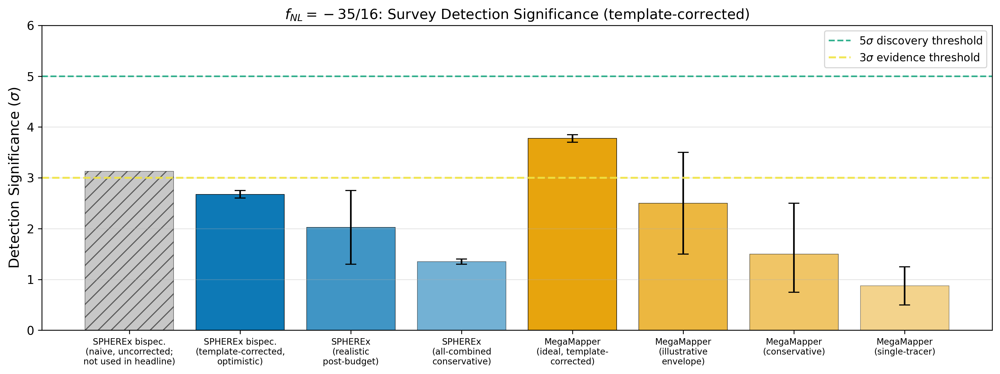
Detection significance for \(f_\mathrm{NL} = -35/8\) across survey configurations, with GR marginalization bands. SPHEREx: 4–6\(\sigma\); MegaMapper: 3–7\(\sigma\).
Paper 2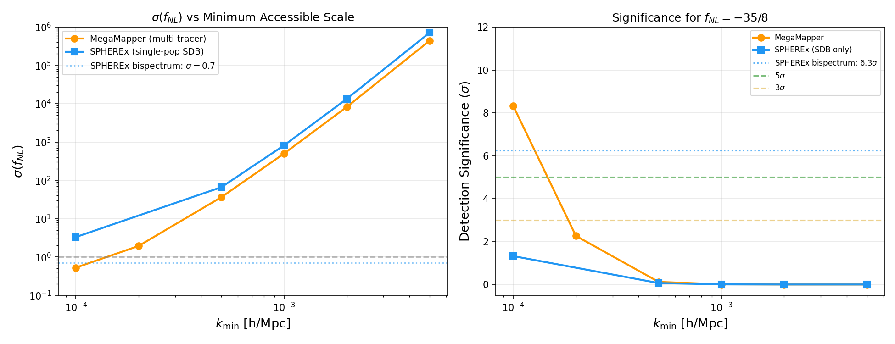
How detection significance depends on the minimum measurable wavenumber, showing the critical role of ultra-large-scale modes.
Paper 2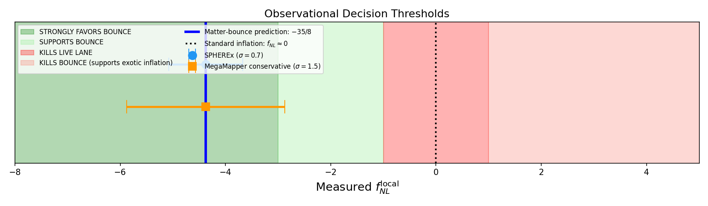
Monte Carlo Bayes factor distributions: bounce vs inflation at various \(f_\mathrm{NL}\) values. Bayes factor ~8-17 vs multifield competitors (prior-dependent).
Paper 2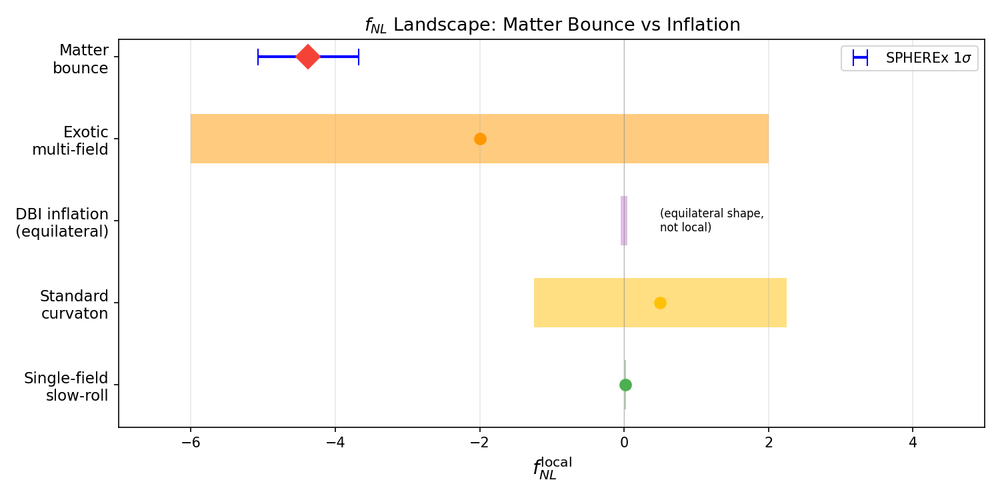
Parameter space comparison showing why negative \(\mathcal{O}(1)\) \(f_\mathrm{NL}\) is natural for bounce but requires fine-tuning for inflation.
Paper 2Paper 1 — ALP Birefringence 2 figures
Figures from Paper 1 §11.5 (ALP birefringence analysis). These show the β posterior comparison across 3 model configurations and the ALP parameter corner plot from 9,720 MCMC samples.

Cosmic birefringence angle \(\beta\) compared across multiple spin-torsion model variants and competing frameworks, showing the predicted signal range.
Paper 1
Updated corner plot from the v2 analysis with refined parameter constraints and additional dataset combinations.
Paper 1Paper 1 — Framework Figures 9 figures
Figures from the original framework investigation (Paper 1). Note: Figures 3a, 3b (tension resolution), and 6 (fine-tuning comparison) reflect values from an analysis that was later corrected by independent MCMC verification (H0 = 69.2 was revised to 67.68; tension reduction was shown to be driven by the SH0ES prior). These are retained as historical documentation of the investigation's evolution.

Shows the derivation chain from Planck scale through one-loop parity-odd operator, inflationary suppression, to observed dark energy scale \(\rho_\Lambda \approx (2.3\;\mathrm{meV})^4\).
Paper 1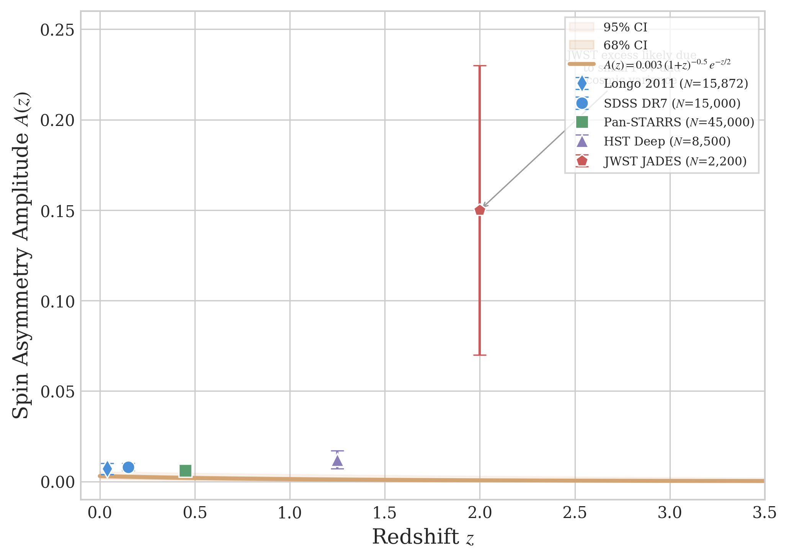
Dipole amplitude across SDSS DR7, Pan-STARRS, HST Deep, and Longo (2011) with hierarchical Bayesian fit. Status: contested anomaly.
Paper 1
Shows spin-torsion model position between Planck and SH0ES/KiDS measurements. Note: tension reduction was disproved by independent MCMC. [Historical: tension reduction was later shown to be SH0ES-prior-driven]
Paper 1
\(H_0\) and \(\sigma_8/S_8\) measurements from 9+ probes with spin-torsion model position overlaid for direct comparison. [Historical: tension reduction was later shown to be SH0ES-prior-driven]
Paper 1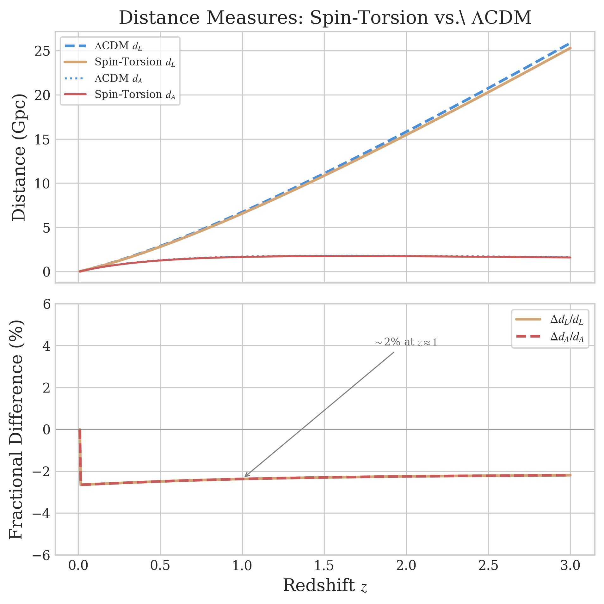
Luminosity and angular diameter distance deviations from \(\Lambda\)CDM at the ~2% level, showing observational signatures of geometric dark energy.
Paper 1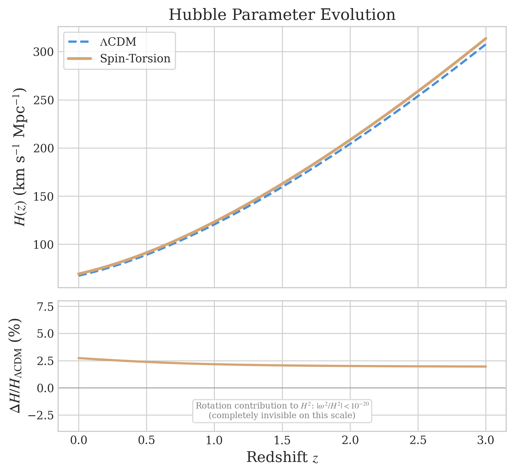
\(H(z)\) comparison showing the rotation contribution is negligibly small (< \(10^{-20}\)), confirming the model is expansion-equivalent to \(\Lambda\)CDM.
Paper 1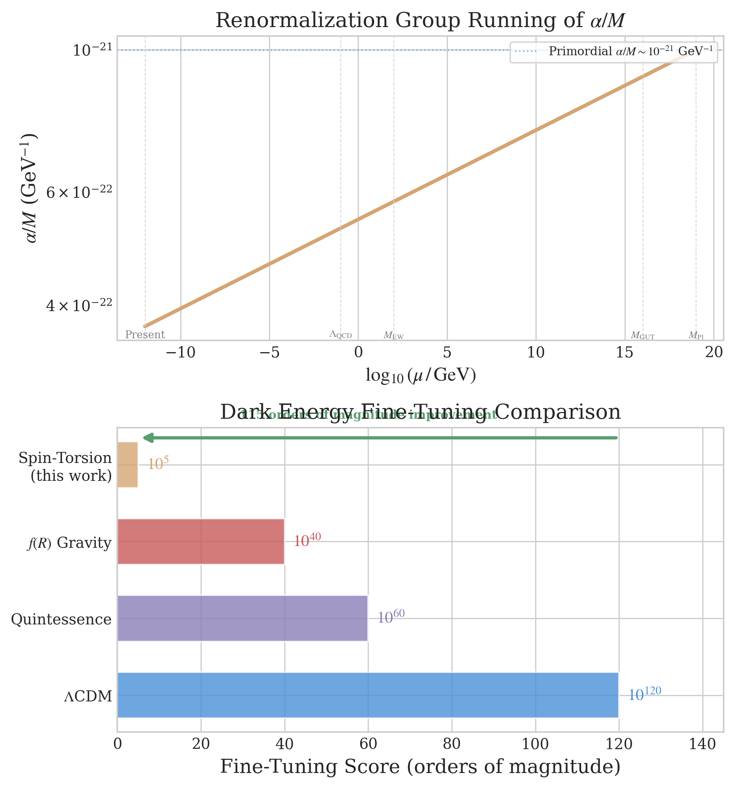
Log-scale fine-tuning: \(\Lambda\)CDM (\(10^{120}\)), Quintessence (\(10^{60}\)), \(f(R)\) (\(10^{40}\)), Spin-Torsion (\(10^5\)). Note: \(10^5\) is illustrative. [Note: 105 figure is reparameterized, not solved]
Paper 1
Key experimental milestones for testing the spin-torsion model: LiteBIRD (early 2030s, JAXA JFY2032), CMB-S4 (2029), LSST (2030), and SPHEREx.
Paper 1
Combined detection significance projections across multiple observational probes, showing cumulative constraining power over the next decade.
Paper 1Paper 1 — MCMC Verification 6 figures
MCMC posteriors, convergence diagnostics, and parameter correlations from Paper 1's independent Cobaya verification (176,840 samples across 4 datasets). These figures established that ΔNeff ≈ 0 in all datasets.

Corner plot showing 2D posterior contours for all primary cosmological parameters from the full-tension MCMC analysis with 176,840 samples.
Paper 1 — MCMC
1D marginalized posterior distributions for key cosmological parameters including \(H_0\), \(\Omega_b h^2\), \(\Omega_c h^2\), and \(\Delta N_\mathrm{eff}\).
Paper 1 — MCMC
Posterior distribution for the dark radiation parameter \(\Delta N_\mathrm{eff}\), with the spin-torsion prediction overlaid. Consistent with zero within 1\(\sigma\).
Paper 1 — MCMC
Chain convergence traces and \(\hat{R}\) evolution across iterations, confirming \(\hat{R} - 1 < 0.005\) for all parameters.
Paper 1 — MCMC
Pearson correlation coefficients between all sampled cosmological parameters, revealing the degeneracy structure of the spin-torsion model.
Paper 1 — MCMC
ESS accumulation across chain iterations, demonstrating sufficient independent samples for reliable posterior estimation.
Paper 1 — MCMCPaper 1 — Dataset Comparisons 4 figures
Cross-dataset comparisons and sensitivity analyses that helped establish the key finding: the spin-torsion extension produces no detectable signal with current data.
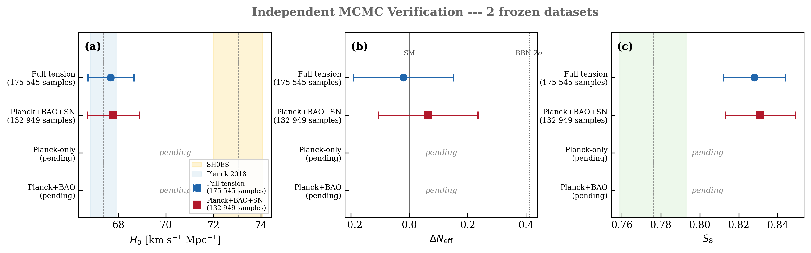
\(H_0\), \(\Delta N_\mathrm{eff}\), and \(S_8\) posteriors compared across frozen dataset combinations (Planck+BAO, Planck+BAO+SN, Full-Tension).
Paper 1 — Analysis
Posterior distributions from both frozen datasets, demonstrating that both are consistent with \(\Delta N_\mathrm{eff} = 0\) at high significance.
Paper 1 — Analysis
4-panel Monte Carlo analysis: vacuum scale distribution, \(N_\mathrm{tot}\) sensitivity, viable fraction of parameter space, and Spearman rank correlations.
Paper 1 — Analysis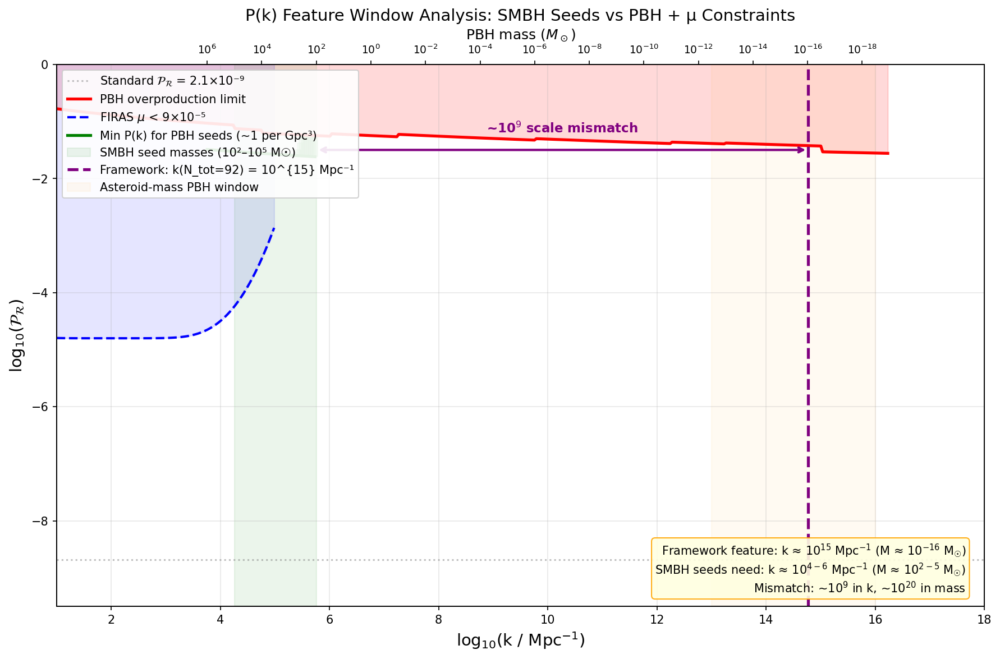
Analysis of potential spectral features in the matter power spectrum that could distinguish spin-torsion cosmology from vanilla \(\Lambda\)CDM.
Paper 1 — AnalysisCross-Cutting — Research Program 1 figure
High-level program architecture and planning diagrams for the BigBounce research initiative.
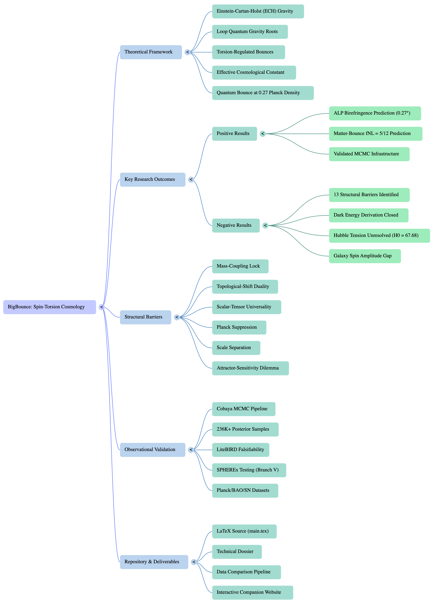
Full architecture of the BigBounce research program, mapping the relationships between theoretical foundations, observational tests, and publication milestones.
Research Program